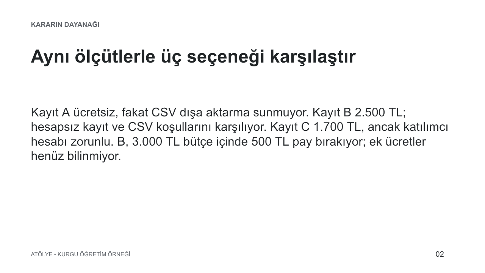
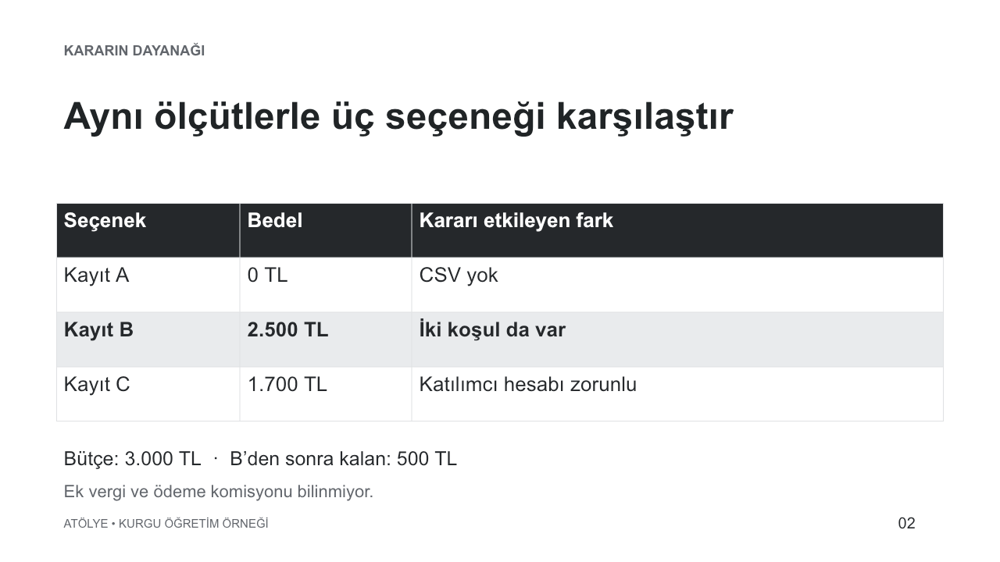

Kurgu iş: Atölye, 60 kişilik ücretsiz bir buluşma için kayıt sistemi seçecek. Katılımcıya hesap açtırmak istemiyor; katılımcı listesini CSV olarak indirebilmesi gerekiyor. Etkinlik başına bütçe 3.000 TL. Aşağıdaki platform adları, fiyatlar ve belge parçaları eğitim için uyduruldu. Gerçek bir ürün karşılaştırması veya yapılmış satın alma yok.
Bu işin sonunda iki şey görünmeli: seçimin dayanağı olan kısa karar notu ve aynı kararı anlatan sunum taslağı. Araştırma, taslak ve görsel düzeltme tek bir iş içinde birbirini besliyor.
- GirdiÖlçüt + kaynak paketi
- SeçimZorunlu koşulla ele
- KararGerekçeyi ve sınırı yaz
- ÇıktıAynı bilgiden sunum
1. İstekten önce kararın ölçüsünü kur
“En iyi platformu bul” demek araştırmanın nereye kadar süreceğini açık bırakır. Bu işte kaliteyi üç koşul belirliyor: hesapsız kayıt, CSV dışa aktarma ve bütçe. Renk veya yüzlerce entegrasyon ancak bu koşulları sağlayan seçenekler arasında fark yaratıyorsa önemli.
Atölye'nin 60 kişilik etkinliği için kayıt sistemi seçiyoruz. Hesapsız kayıt ve CSV dışa aktarma zorunlu; bütçe etkinlik başına 3.000 TL. Önce bu ölçütlerle bir karşılaştırma çıkar, sonra tek öneri ve öneriyi değiştirecek koşulu yaz. Henüz hesap açma veya satın alma yapma.
İş belirsizse /plan ile ölçütleri birlikte netleştirebilirsin. Burada ölçütler zaten belli olduğundan doğrudan uygulama isteği yeterli. Bir planın varlığı ayrıca karar kalitesini garanti etmez. Plan komutu
2. Kaynak yığınını karşılaştırılabilir kanıta dönüştür
Anlatıcı kurgu kaynak paketini açar. Üç kısa belge parçası şöyle bir karşılaştırmayı destekliyor:
Tablonun devamını görmek için yatay kaydır.
| Kurgu seçenek | Etkinlik bedeli | Hesapsız kayıt | CSV | İlk karar |
|---|---|---|---|---|
| Kayıt A | 0 TL | Var | Yok | Zorunlu dışa aktarma koşulunu karşılamıyor |
| Kayıt B | 2.500 TL | Var | Var | Üç koşulu da sağlıyor |
| Kayıt C | 1.700 TL | Yok | Var | Katılımcı hesabı zorunlu |
Gerçek işte bu tabloyu güncel resmî sayfalarla kurdur. Kaynak URL'sini, okunan koşulu ve kontrol tarihini birlikte tut. “CSV var” ifadesinin seçtiğin pakete mi, daha pahalı bir pakete mi ait olduğunu sor. Açılmayan sayfayı tahminle tamamlama. Araştırma yolu seçimi web ve tarayıcı bölümünde.
Kurgu ara hata: İlk taslak C'yi en ucuz ücretli seçenek olduğu için öneriyor. Sorun yetersiz yaratıcılık veya düşük düşünme seviyesi değil; zorunlu koşulun sıralamaya katılmaması.
C daha ucuz, fakat katılımcıya hesap açtırmama koşulunu karşılamıyor. Zorunlu koşulları önce eleme ölçütü yap. Uygun seçenekler arasında maliyeti karşılaştır. Kaynak paketini değiştirme.
Bu düzeltme bir sıfatı değiştirmiyor, karar yöntemini düzeltiyor. B'nin bütçenin altında kalan payı 500 TL; bu sayının rahatlık payı mı yoksa başka masraflara yetecek bütçe mi olduğu ayrı bir değerlendirme. Örnekte ek vergi veya ödeme komisyonu bilgisi yok; toplam maliyetin bunları içerdiği varsayılmıyor.
Sıradaki araştırmayı kararı değiştirecek boşluğa ver
B’nin 500 TL bütçe payını aşan bir ek ücret seçimi değiştirebilir; logosunun rengi değiştirmez.
Önce B’nin ek ücretinin bütçeyi aşıp aşmadığını araştır. Yeni özellik listesi toplama. Bilgi bulunamazsa öneriyi koşullu bırak ve gereken soruyu yaz.
Bu kurgu pakette ek ücret yanıtı yoktur. Dolayısıyla sonuç “kesin satın al” değil, koşullu öneridir. Daha fazla aramanın hangi kararı değiştireceği belli olduğunda araştırma sınır kazanır.
3. Seçimi tek cümleye sığdır, gerekçeyi kaybetme
İyi karar notu bütün araştırmayı tekrar anlatmaz. Örnek karar notunda öneri, gerekçe, elenen seçenekler ve açık koşul birlikte duruyor:
Kurgu belgelerdeki koşullara göre Kayıt B öneriliyor: hesapsız kayıt ve CSV gereksinimlerini karşılıyor, listelenen 2.500 TL bedel bütçenin altında. Ek ücretler doğrulanmalı. Hesap açma koşulu kabul edilirse C yeniden değerlendirilebilir.
Öneriyi değiştirecek koşulu yazmak, kararın hangi varsayıma dayandığını görünür yapar. Kullanıcı daha sonra “hesap açmak sorun değilmiş” derse bütün araştırmayı baştan yapmak gerekmez; değişen ölçütle sıralama yenilenir.
Aktarım zincirindeki gerçek karşılık için C02 vakasına bakabilirsin.
4. Doğrulanmış nottan yeni biçimler üret
Bu karar notunu ana kaynak kabul et. Karar, dayanak ve açık koşulu taşıyan üç slaytlık sunum taslağı hazırla. Yeni fiyat veya özellik ekleme. Ayrıca aynı kararı 100 kelimeyi geçmeyen ekip duyurusuna dönüştür.
Anlatıcı düzenlenebilir üç slaytlık sunumu açar. Metin taslağı aynı kararın sade kaynak karşılığıdır. Aynı B önerisi, aynı 2.500 TL ve aynı ek ücret belirsizliği korunuyor. Slayt için daha kısa yazılması, “ek ücretler bilinmiyor” cümlesinin silinmesini haklı çıkarmaz.

- Nereye bak Soldaki output.pptx bağlantısına, sağdaki slayt listesine.
- Ne yap Sorunlu slaytı seç; yalnız o parçanın değişmesini, sayıların korunmasını iste.
- Ne gör Son dosyada aynı karar ve verilerle daha okunur bir slayt.
Resmî görselde farklı bir sunum gösteriliyor; Atölye için çalıştırılmış oturum ekranı değil. Buradan öğrenilecek hareket, üretim mesajından dosyanın önizlemesine geçmek. Bir slayt kalabalıksa bütün sunumu yeniden yazdırmadan “yalnız ikinci slaytı sadeleştir; karar, sayı ve kaynakları koru” diye belirt. Desteklenen önizlemelerde işaretlenen alan bağlam olarak gönderilebilir. Dosya önizleme ve yorum
Aynı ikinci slaytı sadeleştir
Aşağıdaki iki görüntü, bu rehber için gerçekten oluşturulan PowerPoint örneğinden render edildi. Yoğun sürüm tek paragrafta A/B/C’yi anlatıyor; son sürüm aynı bilgiyi üç karşılaştırma satırına ayırıyor.


- Nereye bak? A, B ve C bilgileri aynı paragrafta.
- Ne yap? Yeni araştırma istemeden aynı bilgiyi karşılaştırma tablosuna dönüştür.
- Ne gör? Düzeltme bilgi miktarını değil kararın görünürlüğünü değiştirir.
Yalnız ikinci slaytı sadeleştir. A’nın CSV eksiği, B’nin 2.500 TL bedeli ve C’nin hesap koşulu kalsın. Diğer slaytları değiştirme.


- Nereye bak? B satırındaki koşul ve 2.500 TL bedeli birlikte oku.
- Ne yap? Yalnız ikinci slaytı düzelt; karar notunu ve diğer slaytları koru.
- Ne gör? 500 TL pay, bilinmeyen ek ücret için araştırma sınırını gösterir.
Birinci slayt kararı, üçüncü slayt açık koşulu gösterir. “Sadeleştir” isteği bilginin silinmesi anlamına gelmedi. Resmî önizleme görseli uygulamadaki açma hareketini; bu iki görüntü ise bizim örneğimizin gerçek çıktısını gösterir.


5. İşin bittiğini hangi çıktıda görürsün?
Teslim, karar notu ve düzenlenebilir sunumdur. Slaytlar gerçek dosyadan üretilip açılarak incelendi; fiyat ve platformlar kurgu. Satın alma veya duyuru gönderimi yapılmadı.
Aynı bilgiyi başka biçime taşırken kararı, tutarı ve belirsizliği koru. Sonraki iş bu yaklaşımı sayısal veriye taşır.
Eğitimde sıradaki: Dağınık tablodan güvenilir rapora